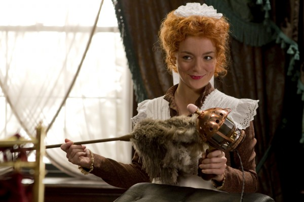

#3418 In guten Händen
Alternativ: Hysteria

 IMDB-Wertung: 6.7 / 10
IMDB-Wertung: 6.7 / 10  Metascore: 53
Metascore: 53 
Im Zeitalter der großen Erfindungen macht sich ein Mann daran, ein Heilmittel zu finden für das Leiden der Frauen... und elektrisierte ganz nebenbei unser aller Liebesleben! Um 1880 befindet sich die viktorianische Prüderie auf dem Höhepunkt, während gleichzeitig die Elektrizität ihren Siegeszug beginnt. In London ist derweil der leidenschaftliche junge Arzt Mortimer Granville (Hugh Dancy) auf der Suche nach einem neuen Job und stößt dabei auf Dr. Robert Dalrymple (Jonathan Pryce). Als Hysterie- und vermeintlicher Frauen-Experte hat er es mit einer stetig steigenden Zahl von Patientinnen zu tun. Zur Heilung legen Dalrymple und sein junger Kollege an ziemlich intimen Stellen Hand an – und haben damit durchschlagenden Erfolg.
Jahr: 2011
Dauer: 99 Minuten
FSK: 12
Land: England Studio: Senator FilmTonspuren: DTS - ,
Untertitel:
Auflösung: 1080p (1920x816) Größe: 6379 MB
Genre: Komödie, Liebe
Regisseur: Tanya Wexler
Drehbuch: Stephen Dyer, Jonah Lisa Dyer, Stephen Dyer, Jonah Lisa Dyer, Howard Gensler
Soundtrack: Gast Waltzing
Darsteller:
 Hugh Dancy als Mortimer Granville
Hugh Dancy als Mortimer Granville Maggie Gyllenhaal als Charlotte Dalrymple
Maggie Gyllenhaal als Charlotte Dalrymple Jonathan Pryce als Dr. Robert Dalrymple
Jonathan Pryce als Dr. Robert Dalrymple Felicity Jones als Emily Dalrymple
Felicity Jones als Emily Dalrymple Rupert Everett als Edmund St. John-Smythe
Rupert Everett als Edmund St. John-Smythe Ashley Jensen als Fannie
Ashley Jensen als Fannie-  Sheridan Smith als Molly
 Gemma Jones als Lady St. John-Smythe
Gemma Jones als Lady St. John-Smythe- Elisabet Johannesdottir als Mrs. Pearce
- Kim Selby als Lady Wheaton
- Jonathan Rhodes als PC Fugate
 Tobias Menzies als Mr. Squyers
Tobias Menzies als Mr. Squyers David Ryall als Judge
David Ryall als Judge Anna Chancellor als Mrs. Bellamy
Anna Chancellor als Mrs. Bellamy David Schaal als Tough Guy
David Schaal als Tough Guy Nicholas Woodeson als Dr. Richardson
Nicholas Woodeson als Dr. Richardson Dominic Borrelli als Worker at Edmunds
Dominic Borrelli als Worker at Edmunds- Jimmy de Brabant als Major Domo
- Kate Linder als Lady Cherwell
- Claira Watson Parr als Ruby , uncredited
- Malcolm Rennie als Lord St. John-Smythe
- Kim Criswell als Mrs. Castellari
 Georgie Glen als Mrs. Parsons
Georgie Glen als Mrs. Parsons- Linda Woodhall als Nurse Smalley
- John Overstall als Mr. Huddleston
- Ann Overstall Comfort als Mrs. Huddleston
- Leila Schaus als Tess
- Jules Werner als Jack the Coal Man
- Maggie McCarthy als Mrs. Copeland
- Michael Webber als Bailiff
- Perry Blanks als Prison Guard
- Ellie Jacob als Nurse
- Jack Kelly als Footman #1
- Joan Linder als Dispensary Old Woman Patient
- Corinna Marlowe als Lady Perrigott
- Thomas Dennis als Newsboy
- Sylvia Strange als Queen Victoria
- Tina Holland als Courtroom spectator , uncredited
- Teresa Mahoney als Woman Queuing 1 , uncredited
- Catherine Meunier als Patient , uncredited
- Steve Saunders als Eastender , uncredited
Datei: X:\2011(G-M)\In guten Händen (2011, FSK12, 1920x816).mkv seit 03.04.2016
Festplatte: HD 2011(G-Z)
 Es gibt insgesamt 100 Filme in der Gruppe '2011(G-M)'
Es gibt insgesamt 100 Filme in der Gruppe '2011(G-M)'